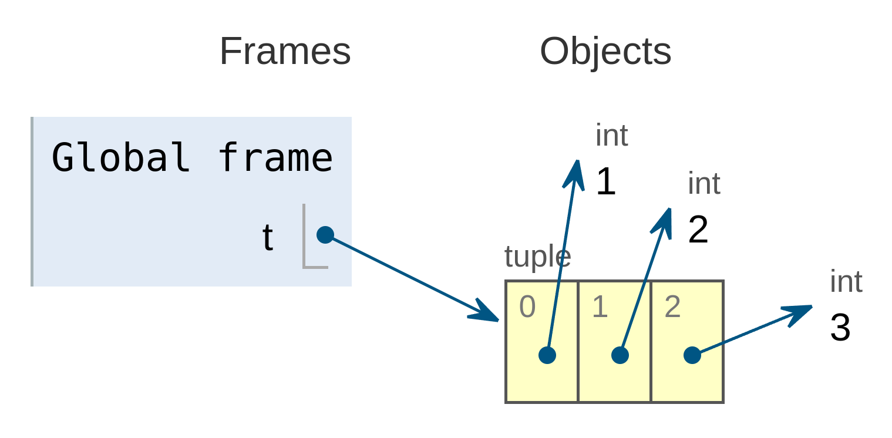
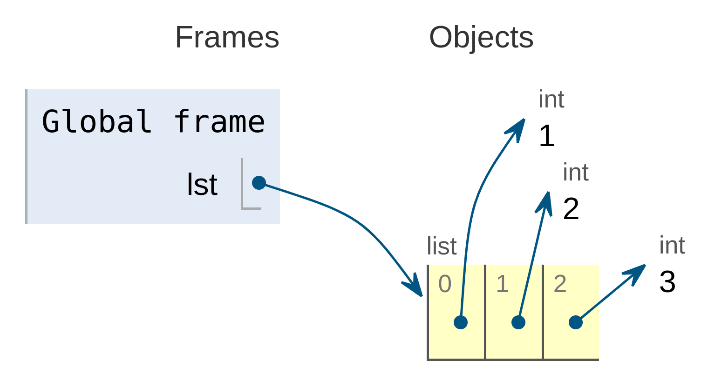

Las instrucciones de un programa son las expresiones y
las sentencias.
Además, hemos visto que podemos crear instrucciones más complejas
a partir de otras más simples. Es decir:
Podemos crear expresiones más complejas combinando entre
sí expresiones más simples.
Podemos crear sentencias compuestas (estructuras de
control, como bloques, condicionales, bucles, etc.) combinando entre sí
otras sentencias.
La propiedad que tienen los lenguajes de programación de crear
elementos más complejos combinando otros más simples se denomina
composición.
La abstracción y la composición
son dos conceptos relacionados:
Componer consiste en combinar elementos entre sí para
formar otros más complejos.
Abstraer consiste en coger un elemento (normalmente
complejo), darle un nombre y ocultar sus detalles internos (es decir,
los elementos que lo componen) dentro de una caja negra.
Lo interesante es que la combinación y la abstracción son dos
mecanismos recursivos:
Podemos crear elementos complejos a partir de otros elementos
complejos.
Podemos crear abstracciones a partir de otras
abstracciones.
Además, por supuesto, podemos crear abstracciones a partir de
composiciones y composiciones a partir de abstracciones.
Por ahora, esos conceptos (composición y
abstracción) sólo los hemos aplicado a las
instrucciones del programa:
La composición de instrucciones da lugar a las
expresiones compuestas y a las sentencias
compuestas (también llamadas estructuras de
control: secuencia, selección e
iteración).
La abstracción de instrucciones da lugar a las
abstracciones funcionales.
Pero también se pueden aplicar a los datos:
La composición de datos da lugar a los
datos compuestos (también llamados datos
estructurados) y, en consecuencia, a los tipos de datos
compuestos (también llamados tipos de datos
estructurados).
La abstracción de datos da lugar a los
datos abstractos y, en consecuencia, a los
tipos abstractos de datos.
En esta unidad hablaremos de la composición de datos y dejaremos
la abstracción de datos para una unidad posterior.
1.2
Conceptos básicos
Un dato estructurado (también llamado
dato compuesto, colección o
contenedor) es un dato formado, a su vez, por otros
datos llamados componentes o
elementos, los cuales representan su
contenido.
Por contra, los datos no estructurados se denominan datos
elementales, escalares o
atómicos.
Un tipo de dato estructurado, también llamado
tipo compuesto, es aquel cuyos valores son datos
estructurados.
Normalmente, se puede acceder de manera
individual a los elementos que componen un dato estructurado y, a veces,
también se pueden modificar esos elementos de manera
individual.
El término estructura de datos se suele usar
como sinónimo de tipo de dato estructurado, aunque
nosotros haremos una distinción:
Usaremos tipo de dato estructurado cuando usemos
un dato sin conocer sus detalles internos de implementación.
Usaremos estructura de datos cuando nos
interesen esos detalles.
1.3
Clasificación
Los datos estructurados se pueden clasificar
atendiendo a su secuencialidad y a su
mutabilidad.
Según su secuencialidad:
Secuenciales: Son aquellos en los que se puede
acceder directamente y de forma eficiente a cada uno de sus elementos
indicando la posición que ocupan dentro de la secuencia.
Por tanto, son colecciones ordenadas, ya que sus elementos
están ordenados dentro de la secuencia según la posición en la que se
encuentran situados dentro de la misma.
No secuenciales: Son aquellos en los que
NO se puede acceder directamente y de forma eficiente a
cada uno de sus elementos indicando la posición que ocupan dentro de la
colección.
En general, las estructuras no secuenciales son colecciones
desordenadas, en las que no se puede afirmar que sus elementos
se encuentran en una posición determinada dentro de la
colección.
Según su mutabilidad:
Inmutables: el dato estructurado no puede
cambiar nunca su estado interno a lo largo de su vida.
Mutables: el dato estructurado puede cambiar su
estado interno a lo largo de su vida sin cambiar su identidad.
El contenido de un dato estructurado forma parte
del estado interno de ese dato estructurado, por lo que
cambiar el contenido de un dato estructurado supone cambiar también su
estado interno.
Por ejemplo, si en la lista [7, 8, 9]
sustituimos su segundo elemento (el 8) por un 5 para obtener
la lista [7, 5, 9],
estamos cambiando el contenido de la lista y, por consiguiente, su
estado interno.
Su identidad no ha cambiado, pero su estado interno sí.
El concepto de hashable es importante en Python ya que
existen tipos de datos estructurados que sólo pueden contener elementos
hashables.
Por ejemplo, los elementos de un conjunto y las claves de un
diccionario deben ser hashables.
La mayoría de los datos inmutables predefinidos en Python son
hashables.
Las colecciones inmutables (como las tuplas o
los frozensets)
sólo son hashables si sus elementos también lo son.
Las coleccion mutables (como las listas o los
diccionarios) NO son hashables.
El hash de un dato depende del estado interno
del dato, ya que se calcula a partir de dicho estado interno
usando un algoritmo que no nos debe preocupar por ahora.
Como el estado interno de una colección viene determinado
principalmente por los elementos que contiene, el hash de una
colección dependerá también del contenido de la colección.
Y por esta razón, las colecciones mutables no son hashables:
si una colección es mutable, su contenido puede cambiar y, por tanto, su
hash también cambiaría, pero esto está prohibido.
El hash de un dato se calcula en función
del estado interno del dato y, en caso de ser una
colección, también en función de su contenido.
El hash de un dato es un número que representa
al dato y a todo su contenido.
En cierto modo, ese número resume el estado del
dato en un simple número entero.
El hash de un dato se utiliza internamente para acceder
al dato dentro de una colección de forma directa y eficiente.
Para ello, el intérprete utiliza ciertas técnicas que permiten
localizar directamente a un dato dentro de una colección, de forma casi
inmediata y sin importar el tamaño de la colección (pero recordemos que
para ello es necesario que el hash del dato nunca
cambie).
De no usar estas técnicas, el intérprete tendría que buscar el
dato secuencialmente dentro de la colección, recorriéndola desde el
principio hasta el final, lo que sería mucho más lento y consumiría un
tiempo que sería mayor cuanto más grande fuese la colección.
Los hashpermiten el acceso directo a un
dato dentro de una colección.
Muy en resumen, las técnicas se basan en dividir el espacio de
memoria que ocupa la colección en una serie de contenedores
llamados buckets.
Cada bucket va numerado por un posible valor de
hash, de forma que el bucket número n contendrá todos los elementos cuyo
hash valga n.
Por tanto, el algoritmo que usa el intérprete para encontrar un
elemento hashable dentro de una colección es:
Calcular el hash del elemento a localizar.
Irse directamente al bucket numerado con ese valor de
hash (esta es una operación inmediata, con coste O(1)).
Localizar dentro del bucket el elemento que se está
buscando usando el ==, lo cual consumirá un tiempo que, en
general, no será mucho, ya que los elementos están repartidos entre
todos los buckets y, por tanto, normalmente no habrá muchos
elementos en cada bucket.
Al final, se consigue encontrar al elemento (si está) de forma
muy rápida, con un coste que es casi constante, independientemente de la
cantidad de elementos que haya en la colección.
No se debe confundir el id de un dato
con el hash de un
dato:
Función id
Función hash
Devuelve la identidad de un dato.
Devuelve el hash de un dato, si es hashable.
Todos los datos tienen identidad.
No todos los datos son hashables.
Puede haber datos iguales pero no idénticos.
Si dos datos son iguales, sus hash también deben
serlo.
Su valor no depende del estado interno del dato y, por tanto,
tampoco de su contenido.
Su valor se obtiene a partir del estado interno del dato (y, por
tanto, de su contenido), usando una fórmula matemática.
Por tanto, no cambia si se modifica el dato.
Por tanto, un dato mutable no puede ser hashable, ya que su
hash cambiaría al cambiar su contenido o estado interno.
1.5
Iterables
Se dice que un dato compuesto es iterable cuando
se puede acceder a todos sus elementos de uno en uno, operación que se
denomina recorrer el iterable.
Gracias a esto, se dice que un iterable nos permite
visitar sus elementos o, también, iterar sobre sus
elementos.
Como iterables tenemos:
Todas las secuencias: listas, cadenas, tuplas y rangos.
Estructuras no secuenciales: diccionarios y conjuntos.
Los iterables no representan un tipo concreto, sino más bien una
familia de tipos que comparten la misma propiedad.
Muchas funciones, como map y filter, actúan
sobre iterables en general, en lugar de hacerlo sobre un tipo concreto
(lista, tupla, …).
Por ejemplo, las listas son iterables ya que nos permite acceder
a todos sus elementos de uno en uno y, por tanto, podemos
recorrerla.
Para visitar sus elementos podemos usar la
indexación, y para recorrer toda la lista podemos usar
un bucle:
def recorrer_lista(l): i =0while i <len(l):print(l[i]) i +=1
1.6
Iteradores
La forma básica de recorrer un dato iterable es usando un
iterador.
De hecho, técnicamente, un iterablese
define como aquel dato al que le podemos asociar, al menos, un
iterador.
Un iterador es un objeto que sabe cómo
recorrer un iterable.
Para ello, el iterador crea un flujo de datos perezoso
que va entregando los elementos del iterable de uno en uno.
Los sucesivos elementos del flujo de datos se van obteniendo al
llamar repetidamente a la función next aplicada
al iterador.
Cuando ya no hay más elementos disponibles, la función next lanza una
excepción de tipo StopIteration,
lo que indica que el iterador se ha agotado (se han
consumido todos sus elementos), por lo que si se sigue llamando a la
función next se seguirá
lanzando esa excepción.
Se puede obtener un iterador a partir de cualquier dato iterable
aplicando la función iter al
iterable.
(Recordemos que todo iterable debe tener asociado un
iterador.)
Ejemplo de uso de iter y next:
>>> lista = [1, 2, 3]>>> it =iter(lista)>>>next(it)1>>>next(it)2>>>next(it)3>>>next(it)Traceback (most recent call last): File "<stdin>", line 1, in<module>StopIteration
Si se le pasa un dato no iterable, iter lanza una
excepción TypeError:
>>> it =iter(9)Traceback (most recent call last): File "<stdin>", line 1, in<module>TypeError: 'int'objectisnot iterable
Los iteradores son iterables perezosos de un solo
uso:
Son perezosos porque van generando sus elementos
a medida que los va entregando, en lugar de generarlos todos a la vez
primero.
Son de un solo uso porque cada elemento sólo se
entrega una vez.
Además, los iteradores son iterables que actúan como sus
propios iteradores:
Por tanto, cuando llamamos a iter pasándole
un iterador, se devuelve el mismo iterador:
>>> lista = [1, 2, 3, 4]>>> it =iter(lista)>>> it<list_iterator object at 0x7f3c49aa9080>>>> it2 =iter(it)>>> it2<list_iterator object at 0x7f3c49aa9080>>>> it == it2True
En consecuencia, podemos usar un iterador en cualquier sitio
donde se espere un iterable.
Funciones como map y filter
devuelven iteradores porque, al ser perezosos, son más eficientes en
memoria que si devolvieran toda una lista o tupla.
Por ejemplo: ¿qué ocurre si sólo necesitamos los primeros elementos
del resultado de un map?
Los iteradores se pueden convertir en listas o tuplas usando las
funciones list y tuple:
>>> l = [1, 2, 3]>>> iterador =iter(l)>>> t =tuple(iterador)>>> t(1, 2, 3)
Las expresiones generadoras, ya conocidas por
nosotros, también son expresiones que devuelven un
iterador:
Al recorrer el iterable, la variable va almacenando en cada
iteración del bucle el valor del elemento que en ese momento se está
visitando.
Si estamos recorriendo una secuencia y necesitamos recuperar
tanto el valor como el índice de cada elemento, podemos
usar la función enumerate.
Esta función devuelve un iterador que va generando tuplas que
contienen, además del elemento, el valor correspondiente de un contador
numérico.
Las tuplas que devuelve el iterador llevan el contador en la
primera posición y el elemento de la secuencia en la segunda
posición.
Por defecto, el contador empieza desde 0 y se va
incrementando de uno en uno, por lo que coincide con el índice del
elemento en la secuencia:
>>>for i, e inenumerate(['a', 'b', 'c']):... print('El elemento en la posición '+str(i) +' es '+str(e))...El elemento en la posición 0 es aEl elemento en la posición 1 es bEl elemento en la posición 2 es c
Existen iterables e iteradores incluso donde uno menos se lo
podría esperar.
Por ejemplo, los archivos abiertos también son
iterables, ya que se pueden recorrer línea a línea usando un
iterador:
withopen('archivo.txt') as f:for linea in f:print(linea)
Esta forma de recorrer los archivos, además de resultar simple y
elegante, también resulta muy eficiente, ya que se va recuperando cada
línea de una en una en lugar de todas a la vez.
1.6.2
El módulo itertools
El módulo itertools
contiene una variedad de iteradores de uso frecuente, así como funciones
que combinan varios iteradores.
Algunos de esos iteradores son muy especiales porque pueden
devolver flujos infinitos o valores que se repiten continuamente, lo
cual contradice en cierta manera lo que dijimos cuando definimos los
iteradores como «iterables de un solo uso».
itertools.count([⟨inicio⟩[,⟨paso⟩]]) devuelve un
flujo infinito de valores separados uniformemente. Se puede indicar
opcionalmente un valor de comienzo (que por defecto es 0) y el
intervalo entre números (que por defecto es 1):
Una secuencia\underline{s} es un dato estructurado
iterable que cumple lo siguiente:
Se le puede calcular su longitud (la cantidad de elementos que
contiene) mediante la función len.
Cada elemento que contiene lleva asociado un número entero
llamado índice, comprendido entre 0 y len(s)-1.
Permite el acceso eficiente a cada uno de sus elementos mediante
indexación s[i], siendo i el índice del elemento.
Las secuencias se dividen en:
Inmutables: cadenas (str), tuplas
(tuple) y
rangos (range).
Mutables: listas (list)
2.2
Operaciones comunes
Todas las secuencias (ya sean cadenas, listas, tuplas o rangos)
comparten un conjunto de operaciones comunes.
Los rangos son una excepción, ya que sus elementos se crean a
partir de una fórmula y, por eso, no admiten ni la concatenación ni la
repetición.
La siguiente tabla recoge las operaciones comunes sobre
secuencias, ordenadas por prioridad ascendente. \underline{s} y \underline{t} son secuencias del mismo tipo,
\underline{n}, \underline{i}, \underline{j} y \underline{k} son enteros y \underline{x} es un dato cualquiera que
cumple con las restricciones que impone \underline{s}.
Operación
Resultado
x\ in\ s
True si algún
elemento de \underline{s} es igual a
\underline{x}
x\ notin\ s
False si algún
elemento de \underline{s} es igual a
\underline{x}
s+t
La concatenación de \underline{s} y \underline{t} (no va con rangos)
s*n n*s
(Repetición) Equivale a
concatenar \underline{s} consigo misma
\underline{n} veces (no va con
rangos)
s[i]
El \underline{i}-ésimo elemento de \underline{s}, empezando por 0
s[i:j]
Rodaja de \underline{s} desde \underline{i} hasta \underline{j}
s[i:j:k]
Rodaja de \underline{s} desde \underline{i} hasta \underline{j} con paso \underline{k}
len(s)
Longitud de \underline{s}
min(s)
El elemento más pequeño de \underline{s}
max(s)
El elemento más grande de \underline{s}
s.index(x [,i [,j ] ])
El índice de la primera aparición de \underline{x} en \underline{s} (desde el índice \underline{i} inclusive y antes del \underline{j})
s.count(x)
Número total de apariciones de \underline{x} en \underline{s}
Además de estas operaciones, las secuencias admiten
comparaciones con los operadores ==,
!=, <, <=,
> y >=.
Dos secuencias \underline{s} y
\underline{t} son iguales (\underline{s}==\underline{t}) si:
Son del mismo tipo (type(s)==type(t)).
Tienen la misma longitud (len(s)==len(t)).
Contienen los mismos elementos en el mismo orden
(s[0]==t[0], s[1]==t[1],
etcétera).
Por supuesto, las dos secuencias son distintas (\underline{s}!=\underline{t}) si no son iguales.
Se pueden comparar dos secuencias con los operadores
<, <=, > y
>= para comprobar si una es menor (o igual) o mayor (o
igual) que la otra si:
Son del mismo tipo (si no son del mismo tipo, lanza una
excepción).
No son rangos.
Las comparaciones <, <=,
> y >= se hacen lexicográficamente
elemento a elemento, como en un diccionario.
Por ejemplo, 'adios'<'hola'
porque adios aparece antes que hola en el
diccionario.
Con el resto de las secuencias se actúa igual que con las
cadenas.
Dadas dos secuencias \underline{s} y
\underline{t}, para ver si \underline{s}<\underline{t} se procede así:
Se empieza comparando el primer elemento de \underline{s} con el primero de \underline{t}.
Si son iguales, se pasa al siguiente hasta encontrar algún
elemento de \underline{s} que sea
distinto a su correspondiente de \underline{t}.
Si llegamos al final de \underline{s} sin haber encontrado ningún
elemento distinto a su correspondiente en \underline{t}, es porque \underline{s}==\underline{t}.
En cuanto se encuentre un elemento de \underline{s} que no es igual a su
correspondiente de \underline{s}, se
comparan esos elementos y se devuelve el resultado de esa
comparación.
Los rangos no se pueden comparar con <,
<=, > o >=.
Una cadena formateada (también llamada
f-string) es una cadena literal que lleva un
prefijo f o F.
Estas cadenas contienen campos de sustitución,
que son expresiones encerradas entre llaves.
En realidad, las cadenas formateadas son expresiones evaluadas en
tiempo de ejecución.
Sintaxis:
⟨f_string⟩ ::= (⟨carácter_literal⟩ |
{{ | }} |
⟨sustitución⟩)* ⟨sustitución⟩ ::=
{⟨expresión⟩
[!⟨conversión⟩]
[:⟨especif⟩]} ⟨conversión⟩ ::=
s | r |
a ⟨especif⟩ ::= (⟨carácter_literal⟩ |
NULL | ⟨sustitución⟩)* ⟨carácter_literal⟩ ::= ⟨cualquier carácter Unicode excepto
{, } o
NULL⟩
Las partes de la cadena que van fuera de las llaves se tratan
literalmente, excepto las dobles llaves {{ y
}}, que son sustituidas por una sola llave.
Una { marca el comienzo de un campo de
sustitución (⟨sustitución⟩), que empieza con una
expresión.
Tras la expresión puede venir un conversión
(⟨conversión⟩), introducida por
una exclamación !.
También puede añadirse un especificador de
formato (⟨especif⟩)
después de dos puntos :.
El campo de sustitución termina con una }.
Las expresiones en un literal de cadena formateada son tratadas
como cualquier otra expresión Python encerrada entre paréntesis, con
algunas excepciones:
No se permiten expresiones vacías.
Las expresiones lambda deben ir entre paréntesis.
Los campos de sustitución pueden contener saltos de línea pero no
comentarios.
Si se indica una conversión, el resultado de evaluar la expresión
se convierte antes de aplicar el formateado.
La conversión !s llama a la función str sobre el
resultado, !r llama a repr y
!a llama a ascii.
A continuación, el resultado es formateado usando la función
format.
Finalmente, el resultado del formateado es incluido en el valor
final de la cadena completa.
La sintaxis general de un especificador de formato es:
⟨especif⟩ ::= [[⟨relleno⟩]⟨alig⟩][⟨signo⟩][#][0][⟨ancho⟩][⟨grupos⟩][.⟨precision⟩][⟨tipo⟩] ⟨relleno⟩ ::= ⟨cualquier carácter⟩ ⟨alig⟩ ::=
< | >
| = |
^ ⟨signo⟩ ::=
+ | - |
⟨espacio⟩ ⟨ancho⟩ ::= ⟨dígito⟩+ ⟨grupos⟩ ::=
_ | , ⟨precision⟩ ::= ⟨dígito⟩+ ⟨tipo⟩ ::=
b | c |
d | e |
E | f |
F | g |
G | n |
o | s |
x | X |
%
Los especificadores de formato de nivel superior pueden incluir
campos de sustitución anidados.
Estos campos anidados pueden incluir, a su vez, sus propios
campos de conversión y sus propios especificadores de formato, pero no
pueden incluir más campos de sustitución anidados.
>>> nombre ='Pepe'>>>f'El nombre es: {nombre}'# Se sustituye la variable por su valor'El nombre es: Pepe'>>> apellidos ='Pérez'>>>f'El nombre es: {nombre}{apellidos}'# Igual'El nombre es: Pepe Pérez'>>>f'El nombre es: {nombre + apellidos}'# Se puede usar cualquier expresión'El nombre es: Pepe Pérez'>>>f'Formato con anchura: {nombre:10}'# Las cadenas se alinean a la izquierda'Formato con anchura: Pepe '>>>f'Formato con anchura: {nombre:<10}'# Igual que lo anterior'Formato con anchura: Pepe '>>>f'Formato con anchura: {nombre:>10}'# Alinea a la derecha'Formato con anchura: Pepe'>>>f'Formato con anchura: {nombre:^10}'# Alinea al centro'Formato con anchura: Pepe '
Ejemplos de cadenas formateadas con números positivos:
>>> x, y =400, 300>>>f'La suma de {x} y {y} es {x+y}'# Se puede usar cualquier expresión'La suma de 400 y 300 es 700'>>>f'Formato con anchura: {x:10}'# Los números se alinean a la derecha'Formato con anchura: 400'>>>f'Formato con anchura: {x:>10}'# Igual que lo anterior'Formato con anchura: 400'>>>f'Formato con anchura: {x:2}'# Ancho demasiado pequeño, se ignora'Formato con anchura: 400'>>>f'Formato con anchura: {x:<10}'# Alinea a la izquierda'Formato con anchura: 400 '>>>f'Formato con anchura: {x:>10}'# Alinea a la derecha'Formato con anchura: 400'>>>f'Formato con anchura: {x:^10}'# Alinea al centro'Formato con anchura: 400 '>>>f'Formato con anchura: {x:=10}'# En positivos no hay diferencia con >'Formato con anchura: 400'>>>f'Formato con anchura: {x:@<10}'# Alinea a la izquierda, rellena con @'Formato con anchura: 400@@@@@@@'>>>f'Formato con anchura: {x:@>10}'# Alinea a la derecha, rellena con @'Formato con anchura: @@@@@@@400'>>>f'Formato con anchura: {x:@^10}'# Alinea al centro, rellena con @'Formato con anchura: @@@400@@@@'>>>f'Formato con anchura: {x:@=10}'# En positivos no hay diferencia con >'Formato con anchura: @@@@@@@400'
Ejemplos de cadenas formateadas con números negativos:
>>> z =-400>>>f'Formato con anchura: {z:10}'# A la derecha, signo junto al nº'Formato con anchura: -400'>>>f'Formato con anchura: {z:<10}'# A la izquierda, signo junto al nº'Formato con anchura: -400 '>>>f'Formato con anchura: {z:>10}'# A la derecha, signo junto al nº'Formato con anchura: -400'>>>f'Formato con anchura: {z:^10}'# Al centro, signo junto al nº'Formato con anchura: -400 '>>>f'Formato con anchura: {z:=10}'# A la derecha, signo junto al relleno'Formato con anchura: - 400'>>>f'Formato con anchura: {z:010}'# A la derecha, signo junto al relleno'Formato con anchura: -000000400'>>>f'Formato con anchura: {z:0<10}'# A la izquierda, signo junto al nº'Formato con anchura: -400000000'>>>f'Formato con anchura: {z:0>10}'# A la derecha, signo junto al nº'Formato con anchura: 000000-400'>>>f'Formato con anchura: {z:0^10}'# Al centro, signo junto al nº'Formato con anchura: 000-400000'>>>f'Formato con anchura: {z:0=10}'# A la derecha, signo junto al relleno'Formato con anchura: -000000400'>>>f'Formato con anchura: {z:@<10}'# A la izquierda, signo junto al nº'Formato con anchura: -400@@@@@@'>>>f'Formato con anchura: {z:@>10}'# A la derecha, signo junto al nº'Formato con anchura: @@@@@@-400'>>>f'Formato con anchura: {z:@^10}'# Al centro, signo junto al nº'Formato con anchura: @@@-400@@@'>>>f'Formato con anchura: {z:@=10}'# A la derecha, signo junto al relleno'Formato con anchura: -@@@@@@400'
Ejemplos de cadenas formateadas con números en coma flotante:
>>>from math import pi>>>f'El valor de pi es {pi:6.3}'# Ancho 6, precisión 3'El valor de pi es 3.14'>>>f'El valor de pi es {pi:10.3}'# Ancho 10, precisión 3'El valor de pi es 3.14'>>>f'El valor de pi es {pi:<10.3}'# A la izquierda'El valor de pi es 3.14 '>>>f'El valor de pi es {pi:>10.3}'# A la derecha'El valor de pi es 3.14'>>>f'El valor de pi es {pi:^10.3}'# Al centro'El valor de pi es 3.14 '>>>f'El valor de pi es {pi:=10.3}'# A la derecha'El valor de pi es 3.14'>>>f'El valor de pi es {pi:10.3f}'# 3 dígitos en la parte fraccionaria'El valor de pi es 3.142'>>>f'El valor de pi es {pi:<10.3f}'# A la izquierda'El valor de pi es 3.142 '>>>f'El valor de pi es {pi:>10.3f}'# A la derecha'El valor de pi es 3.142'>>>f'El valor de pi es {pi:^10.3f}'# Al centro'El valor de pi es 3.142 '>>>f'El valor de pi es {pi:=10.3f}'# A la derecha'El valor de pi es 3.142'>>>f'El valor de pi es {-pi:=10.3f}'# Los negativos, igual que los enteros'El valor de pi es - 3.142'
Más ejemplos:
>>> nombre ="Fred">>>f"Dice que su nombre es {nombre!r}.""Dice que su nombre es 'Fred'.">>>f"Dice que su nombre es {repr(nombre)}."# repr es equivalente a !r"Dice que su nombre es 'Fred'.">>> ancho =10>>> precision =4>>> value = decimal.Decimal("12.34567")>>>f"result: {value:{ancho}.{precision}}"# campos anidados'result: 12.35'>>>import datetime>>> hoy = datetime.datetime(year=2017, month=1, day=27)>>>f"{hoy:%B%d,%Y}"# usando especificador de formato de fecha'January 27, 2017'>>> numero =1024>>>f"{numero:#0x}"# usando especificador de formato de enteros'0x400'
2.3.1.2 Expresiones regulares
Las expresiones regulares (también llamados
regex) constituyen un pequeño lenguaje muy especializado
incrustado dentro de Python y disponible a través del módulo
re.
Usando este pequeño lenguaje es posible especificar
reglas sintácticas de una forma distinta pero parecida
a las gramáticas EBNF (aunque con menos poder
expresivo).
Esas reglas sintácticas se pueden usar luego para
comprobar si una cadena se ajusta a un
patrón.
Este patrón puede ser frases en español, o direcciones de correo
electrónico o cualquier otra cosa.
A continuación, se pueden hacer preguntas del tipo: «¿Esta
cadena se ajusta al patrón?» o «¿Hay algo que se ajuste al
patrón en alguna parte de esta cadena?».
También se pueden usar las regexes para
modificar una cadena o dividirla en
partes según el patrón indicado.
El lenguaje de las expresiones regulares es relativamente pequeño
y restringido, por lo que no es posible usarlo para realizar cualquier
tipo de procesamiento de cadenas.
Además, hay procesamientos que se pueden realizar con
regexes pero las expresiones que resultan se vuelven muy
complicadas.
En estos casos, es mejor escribir directamente código Python ya
que, aunque el código resultante pueda resultar más lento, probablemente
resulte más fácil de leer.
Para más información sobre cómo crear y usar expresiones
regulares, consultar:
Las tuplas (tuple) son
secuencias inmutables, usadas frecuentemente para representar
colecciones de datos heterogéneos (es decir, de tipos
distintos).
También se usan en aquellos casos en los que se necesita una
secuencia inmutable de datos homogéneos (por ejemplo, para almacenar
datos en un conjunto o un diccionario).
Las tuplas se pueden crear así:
Si es una tupla vacía, con paréntesis vacíos: ()
Si sólo tiene un elemento, se pone una coma detrás:
a,
(a,)
Si tiene más de un elemento, se separan con comas:
a,b,c
(a,b,c)
Usando la función tuple(⟨iterable⟩).
Observar que lo que construye la tupla es realmente la coma, no
los paréntesis.
Los paréntesis son opcionales, excepto en dos casos:
La tupla vacía: ()
Cuando son necesarios para evitar ambigüedad.
Por ejemplo, f(a,b,c) es una llamada a una función
con tres argumentos, mientras que f((a,b,c)) es una llamada a una función
con un único argumento que es una tupla de tres elementos.
Las tuplas implementan todas las operaciones comunes de las
secuencias.
En general, las tuplas se pueden considerar como la versión
inmutable de las listas.
Además, las tuplas son hashables si sus elementos
también lo son.
En memoria, las tuplas se almacenan mediante una estructura de
datos donde sus elementos se identifican mediante un índice, que es un
número entero que indica la posición que ocupa el elemento dentro de la
tupla.
Por ejemplo, la siguiente tupla:
t = (1, 2, 3)
se almacenaría de la siguiente forma según lo representa la
herramienta Pythontutor:

Tupla almacenada en memoria
2.3.3
Rangos
Los rangos (range)
representan secuencias inmutables y hashables de números
enteros y se usan frecuentemente para hacer bucles que se repitan un
determinado número de veces.
Cuando start y stop son iguales, representa el
rango vacío.
step debe ser siempre distinto de cero.
Cuando start es mayor que stop, el valor de
step debería ser negativo. En caso contrario, también
representaría el rango vacío.
El contenido de un rango r vendrá determinado por la fórmula: r[i] =
start + step \cdot i donde i \geq
0. Además:
Si step > 0, se impone
también la restricción r[i] <
\text{\textit{stop}}.
Si step < 0, se impone
también la restricción r[i] >
\text{\textit{stop}}.
Un rango es vacío cuando r[0] no satisface las restricciones
anteriores.
Los rangos admiten índices negativos, pero se
interpretan como si se indexara desde el final de la secuencia usando
índices positivos.
Los rangos implementan todas las operaciones de las
secuencias, excepto la concatenación y la
repetición.
Esto es debido a que los rangos sólo pueden representar secuencias
que siguen un patrón muy estricto, y las repeticiones y las
concatenaciones a menudo violan ese patrón.
Los rangos son perezosos y además ocupan mucha
menos memoria que las listas o las tuplas (sólo hay que almacenar
start, stop y step).
La forma normal de un rango es una expresión en
la que se llama a la función range con los
argumentos necesarios para construir el rango:
El rango vacío es un valor que no tiene
expresión canónica, ya que cualquiera de las siguientes expresiones
representan al rango vacío tan bien como cualquier otra:
En memoria, las listas se almacenan mediante una estructura de
datos donde sus elementos se identifican mediante un índice, que es un
número entero que indica la posición que ocupa el elemento dentro de la
lista.
Por ejemplo, la siguiente lista:
lst = [1, 2, 3]
se almacenaría de la siguiente forma según lo representa la
herramienta Pythontutor:

Lista almacenada en memoria
2.4.1.1 Listas por comprensión
También se pueden crear listas por comprensión
usando la misma sintaxis de las expresiones generadoras
pero encerrando la expresión entre corchetes en lugar de entre
paréntesis.
Como se ve, el resultado es directamente una lista, no un
iterador.
Por tanto, a diferencia de lo que pasa con las expresiones
generadoras, el resultado de una lista por comprensión no es
perezoso, cosa que habrá que tener en cuenta para evitar
consumir más memoria de la necesaria o generar elementos que al final no
sean necesarios.
Por ejemplo, la siguiente expresión generadora:
res_gen = (x **2for x inrange(0, 10000000000000))
es mucho más eficiente en tiempo y espacio que la lista por
comprensión:
res_list = [x **2for x inrange(0, 10000000000000)]
ya que la expresión generadora devuelve un iterador
que irá generando los valores de uno en uno a medida que los vayamos
recorriendo con next(res_gen).
En cambio, la lista por comprensión genera todos los valores de la
lista a la vez y los almacena todos juntos en la memoria.
A cambio, la ventaja de tener una lista frente a tener un
iterador es que podemos acceder directamente a cualquier elemento de la
lista mediante la indexación.
Las listas por comprensión, al igual que las expresiones
generadoras, determinan su propio
ámbito.
Ese ámbito abarca toda la lista por comprensión, de principio a
fin.
Los identificadores que aparecen en la cláusula for se
consideran variables ligadas en la lista por
comprensión.
Esos identificadores se van ligando, uno a uno, a cada elemento
de la secuencia indicada en la cláusula in.
Como son variables ligadas, cumplen estas dos propiedades:
Se pueden renombrar (siempre de forma consistente) sin que la
lista por comprensión cambie su significado.
Por ejemplo, las dos listas por comprensión siguientes son
equivalentes, puesto que producen el mismo resultado:
[x for x in (1, 2, 3)]
[y for y in (1, 2, 3)]
No se pueden usar fuera de la lista por comprensión, ya que
estarían fuera de su ámbito y no serían visibles.
Por ejemplo, lo siguiente daría un error de nombre:
>>> e = [x for x in (1, 2, 3)]>>> x # Intento acceder a la 'x' de la lista por comprensiónTraceback (most recent call last): File "<stdin>", line 1, in<module>NameError: name 'x'isnot defined
2.4.2
Operaciones mutadoras
En la siguiente tabla, \underline{s} es una instancia de un tipo de
secuencia mutable (por ejemplo, una lista), \underline{t} es cualquier dato iterable y
\underline{x} es un dato cualquiera que
cumple con las restricciones que impone \underline{s}:
Operación
Resultado
s[i]=x
El elemento i-ésimo de \underline{s} se sustituye por \underline{x}
s[i:j]=t
La rodaja de \underline{s} desde \underline{i} hasta \underline{j} se sustituye por \underline{t}
s[i:j:k]=t
Los elementos de s[i:j:k] se sustituyen por \underline{t}
del\ s[i]
Elimina el elemento i-ésimo de \underline{s}
del\ s[i:j]
Elimina los elementos de s[i:j]
Equivale a hacer s[i:j]=[]
del\ s[i:j:k]
Elimina los elementos de s[i:j:k]
Operación
Resultado
s.append(x)
Añade \underline{x} al final de \underline{s}; es igual que s[len(s):len(s)]=[x]
s.clear()
Elimina todos los elementos de \underline{s}; es igual que del\ s[:]
s.copy()
Crea una copia superficial de
\underline{s}; es igual que s[:]
s.extend(t) s+=t
Extiende \underline{s} con el contenido de \underline{t}; es igual que s[len(s):len(s)]=t
s*=n
Modifica \underline{s} repitiendo su contenido \underline{n} veces
s.insert(i,x)
Inserta \underline{x} en \underline{s} en el índice \underline{i}; es igual que s[i:i]=[x]
s.pop([ i ])
Extrae el elemento \underline{i} de \underline{s} y lo devuelve
(por defecto, i vale -1)
s.remove(x)
Quita el primer elemento de \underline{s} que sea igual a \underline{x}
s.reverse()
Invierte los elementos de \underline{s}
s.sort()
Ordena los elementos de \underline{s}
La copia superficial (a diferencia de la
copia profunda) significa que sólo se copia el
objeto sobre el que se aplica la copia, no sus
elementos.
Por tanto, al crear la copia superficial, se crea sólo un nuevo
objeto, donde se copiarán las referencias de los elementos del objeto
original.
Esto influye, sobre todo, cuando los elementos de una colección
mutable también son objetos mutables.
Por ejemplo, si tenemos listas dentro de otra lista, y copiamos
ésta última con .copy(), la nueva
lista compartirá elementos con la lista original:
>>> x = [[1, 2], [3, 4]] # los elementos de «x» también son listas>>> y = x.copy() # «y» es una copia de «x»>>> x is yFalse# no son la misma lista>>> x[0] is y[0]True# sus elementos no se han copiado,>>> x[0].append(9) # sino que están compartidos por «x» e «y»>>> x[[1, 2, 99], [3, 4]]>>> y[[1, 2, 99], [3, 4]]
El método sort permite
ordenar los elementos de la secuencia de forma ascendente o
descendente:
Un conjunto es una colección no ordenada de
elementos hashables.
Se usan frecuentemente para comprobar si un elemento pertenece a
un grupo, para eliminar duplicados en una secuencia y para realizar
operaciones matemáticas como la unión, la intersección
y la diferencia simétrica.
Como cualquier otra colección, los conjuntos permiten el uso
de:
x\ in\ c
len(c)
for\ x\ in\ c
Como son colecciones no ordenadas, los conjuntos no
almacenan la posición de los elementos o el
orden en el que se insertaron.
Por tanto, tampoco admiten la indexación, las rodajas ni
cualquier otro comportamiento propio de las secuencias.
Cuando decimos que un conjunto no está ordenado,
queremos decir que los elementos que contiene no se encuentran situados
en una posición concreta.
Es lo contrario de lo que ocurre con las sencuencias, donde cada
elemento se encuentra en una posición indicada por su índice y
podemos acceder a él usando la indexación.
Además, en un conjunto no puede haber elementos
repetidos (un elemento concreto sólo puede estar una
vez dentro de un conjunto, es decir, o está una vez o no
está).
En resumen:
En un conjunto:
Un elemento concreto, o está una vez, o no está.
Si está, no podemos saber en qué posición (no tiene sentido
preguntárselo).
Existen dos tipos predefinidos de conjuntos: set y frozenset.
El tipo set es
mutable, es decir, que su contenido puede cambiar
usando métodos como add y remove.
Como es mutable, no es hashable y, por
tanto, no puede usarse como clave de un diccionario o como elemento de
otro conjunto.
El tipo frozenset es
inmutable y hashable. Por tanto, su contenido
no se puede cambiar una vez creado y puede usarse como clave de un
diccionario o como elemento de otro conjunto.
Los dos tipos de conjuntos se crean con las funciones set([⟨iterable⟩]) y frozenset([⟨iterable⟩]):
Si se llaman sin argumentos, devuelven un conjunto
vacío:
set() devuelve
un conjunto vacío de tipo set.
frozenset()
devuelve un conjunto vacío de tipo frozenset.
>>>set()set()>>>frozenset()frozenset()
Como se ve, esas son, precisamente, las formas
normales de un conjunto vacío de tipo set y frozenset.
Si se les pasa un iterable (como por ejemplo, una
lista), devuelve un conjunto formado por los elementos del iterable:
Además, existe una sintaxis especial para escribir
literales de conjuntos no vacíos de tipo set,
que consiste en encerrar sus elementos entre llaves y separados por
comas: {'pepe', 'juan'}.
>>> x = {'pepe', 'juan'} # un literal de tipo set, como set(['pepe', 'juan'])>>> x{'pepe', 'juan'}>>>type(x)<class'set'>
Esa es, precisamente, la forma normal de un conjunto
no vacío y, por tanto, la que se usa cuando se visualiza desde el
intérprete o se imprime con print.
Por tanto, para crear conjuntos congelados usando frozenset
podemos usar esa sintaxis en lugar de usar listas como hicimos
antes:
>>>frozenset({4, 3, 2, 2, 4})frozenset({2, 3, 4})
También podría usarse con la función set, pero
entonces estaríamos creando un nuevo conjunto igual que el anterior,
aunque no idéntico (es decir, sería una copia del
original):
>>> s = {4, 3, 2, 2, 4}>>> s{2, 3, 4}>>> t =set(s)>>> t{2, 3, 4}>>> s == tTrue>>> s is tFalse
En memoria, los conjuntos se almacenan mediante una estructura de
datos donde sus elementos no se identifican mediante ningún índice o
clave especial.
Por ejemplo, el siguiente conjunto:
d = {1, 2, 3}
se almacenaría de la siguiente forma según lo representa la
herramienta Pythontutor:
Conjunto almacenado en
memoria
3.1.1
Conjuntos por comprensión
También se pueden crear conjuntos por
comprensión usando la misma sintaxis de las expresiones
generadoras y las listas por comprensión, pero
esta vez encerrando la expresión entre llaves.
El resultado es directamente un valor de tipo set, no un
iterador.
Los conjuntos por comprensión, al igual que las expresiones
generadoras y las listas por comprensión, determinan su propio
ámbito.
Ese ámbito abarca todo el conjunto por comprensión, de principio
a fin.
Los identificadores que aparecen en la cláusula for se
consideran variables ligadas en el conjunto por
comprensión.
Esos identificadores se van ligando, uno a uno, a cada elemento
de la secuencia indicada en la cláusula in.
Como son variables ligadas, cumplen estas dos propiedades:
Se pueden renombrar (siempre de forma consistente) sin que el
conjunto por comprensión cambie su significado.
Por ejemplo, los dos conjuntos por comprensión siguientes son
equivalentes, puesto que producen el mismo resultado:
{x for x in (1, 2, 3)}
{y for y in (1, 2, 3)}
No se pueden usar fuera del conjunto por comprensión, ya que
estarían fuera de su ámbito y no serían visibles.
Por ejemplo, lo siguiente daría un error de nombre:
>>> e = {x for x in (1, 2, 3)}>>> x # Intento acceder a la 'x' del conjunto por comprensiónTraceback (most recent call last): File "<stdin>", line 1, in<module>NameError: name 'x'isnot defined
3.1.2
Operaciones
\underline{s} y \underline{o} son conjuntos, y \underline{x} es un valor cualquiera:
Operación
Resultado
len(s)
Número de elementos de \underline{s} (su cardinalidad)
x\ in\ s
True si \underline{x} pertenece a \underline{s}
x\ notin\ s
True si \underline{x} no pertenece a \underline{s}
s.isdisjoint(o)
True si \underline{s} no tiene ningún elemento en
común con \underline{o}
s.issubset(o) s<=o
True si \underline{s} es un subconjunto de \underline{o}
s<o
True si \underline{s} es un subconjunto propio de
\underline{o}
s.issuperset(o) s>=o
True si \underline{s} es un superconjunto de \underline{o}
s>o
True si \underline{s} es un superconjunto propio de
\underline{o}
Operación
Resultado
s.union(o) s|o
Unión de \underline{s} y \underline{o} (s
\cup o)
s.intersection(o) s&o
Intersección de \underline{s} y \underline{o} (s
\cap o)
s.difference(o) s-o
Diferencia de \underline{s} y \underline{o} (s
\setminus o)
s.symmetric_difference(o) s^o
Diferencia simétrica de \underline{s} y \underline{o} (s
\vartriangle o)
s.copy()
Devuelve una copia superficial de \underline{s}
Tanto set como frozenset
admiten comparaciones entre conjuntos.
Suponiendo que a y b son conjuntos:
a == b si y sólo si cada elemento de a
pertenece también a b, y viceversa; es decir, si cada uno
es un subconjunto del otro.
a <= b si y sólo si a es un
subconjunto de b (es decir, si cada elemento de
a está también en b).
a < b si y sólo si a es un
subconjunto propio de b (es decir, si
a es un subconjunto de b, pero no es igual a
b).
a >= b si y sólo si a es un
superconjunto de b (es decir, si cada elemento de
b está también en a).
a > b si y sólo si a es un
superconjunto propio de b (es decir, si
a es un superconjunto de b, pero no es igual a
b).
3.1.3
Operaciones sobre conjuntos mutables
Estas tablas sólo se aplica a conjuntos mutables (o sea, al tipo
set y no
al frozenset):
Operación
Resultado
s.update(o) s|=o
Actualiza \underline{s} añadiendo los elementos de
\underline{o}
s.intersection_update(o) s&=o
Actualiza \underline{s} manteniendo sólo los elementos
que están en \underline{s} y \underline{o}
s.difference_update(o) s-=o
Actualiza \underline{s} eliminando los elementos que
están en \underline{o}
s.symmetric_difference_update(o) s^=o
Actualiza \underline{s} manteniendo sólo los elementos
que están en \underline{s} y \underline{o} pero no en ambos
Operación
Resultado
s.add(x)
Añade \underline{x} a \underline{s}
s.remove(x)
Elimina \underline{x} de \underline{s} (produce KeyError si
\underline{x} no está en \underline{s})
s.discard(x)
Elimina \underline{x} de \underline{s} si está en \underline{s}
s.pop()
Elimina y devuelve un valor cualquiera de
\underline{s} (produce KeyError si
\underline{s} está vacío)
s.clear()
Elimina todos los elementos de \underline{s}
3.1.4
Recorrido de conjuntos
Como cualquier otro dato iterable, los conjuntos se pueden
recorrer usando iteradores.
El orden en el que se recorren los elementos del
conjunto no está determinado de antemano, es decir, que
el iterador puede entregar los elementos del conjunto en
cualquier orden:
Con un iterador:
>>> s = {3, 1, 2}>>> it =iter(s)>>>next(it)1>>>next(it)2>>>next(it)3
Con un bucle for:
>>> s = {3, 1, 2}>>>for e in s:... print(e)...123
Aunque, a la vista de este ejemplo, pudiera parecer que el conjunto
siempre se va a recorrer como si estuviese ordenado, no hay que
confiar nunca en que eso se vaya a cumplir siempre.
3.2
Diccionarios (dict)
Un diccionario es una colección que almacena
correspondencias (o asociaciones) entre
valores.
Por tanto, los elementos de un diccionario son parejas de
valores llamados clave y valor, y lo que hace
el diccionario es almacenar las claves y el valor que
le corresponde a cada clave.
Además, los elementos de un diccionario son datos mutables y, por
tanto, los diccionarios también son mutables.
En consecuencia, los diccionarios NO son
hashables.
Los diccionarios se pueden crear:
Con una pareja de llaves:
{}
que representan el diccionario vacío.
Encerrando entre llaves una lista de parejas ⟨clave⟩:⟨valor⟩ separadas por comas:
{'juan': 4098, 'pepe': 4127}
Esa es precisamente la forma normal de un
diccionario y, por tanto, la que se usa cuando se visualiza desde el
intérprete o se imprime con print.
Usando la función dict.
Por ejemplo:
>>> v1 = {} # diccionario vacío>>> v2 =dict() # también diccionario vacío>>> v1 == v2True# son iguales>>> a = {'uno': 1, 'dos': 2, 'tres': 3} # literal>>> b =dict(uno=1, dos=2, tres=3) # argumentos con nombre>>> c =dict([('dos', 2), ('uno', 1), ('tres', 3)]) # lista de tuplas>>> d =dict({'tres': 3, 'uno': 1, 'dos': 2}) # crea una copia>>> e =dict(zip(['uno', 'dos', 'tres'], [1, 2, 3])) # con dos iterables>>> a == b and b == c and c == d and d == e # todos son igualesTrue
En memoria, los diccionarios se almacenan como
tablas de dos columnas, la clave y el valor.
Por ejemplo, el siguiente diccionario:
d = {'a': 1, 'b': 2, 'c': 3}
se almacenaría de la siguiente forma según lo representa la
herramienta Pythontutor:
Diccionario almacenado en
memoria
Las claves de un diccionario deben cumplir dos
restricciones:
Deben ser únicas en ese diccionario.
Deben ser hashables.
3.2.0.1 Claves únicas
En un diccionario dado, cada clave sólo puede asociarse
con un único valor.
Por tanto, en un diccionario no puede haber claves
repetidas, es decir, que no puede haber dos elementos distintos
con la misma clave.
Esto es así porque los elementos de un diccionario se identifican
mediante su clave.
Así que, para acceder a un elemento dentro de un diccionario, debemos
indicar la clave del elemento.
Los tipos numéricos que se usen como claves obedecen las reglas
normales de comparación numérica.
Por tanto, si dos números son considerados iguales (como 1 y 1.0) entonces
se consideran la misma clave dentro del diccionario.
Si se intenta crear un diccionario con claves repetidas, sólo se
almacenará uno de los elementos que tengan la misma clave (los demás se
ignoran):
Como se ve, la clave 'perro'
está repetida y, por tanto, sólo se almacena uno de los dos elementos
con clave repetida, que siempre es el último que se va a insertar en el
diccionario.
En este caso, se almacena el elemento 'perro': 'doggy'
y se ignora el 'perro': 'dog'.
3.2.0.2 Claves
hashables
Por otra parte, las claves de un diccionario
deben ser datos hashables.
Por tanto, no se pueden usar como clave una lista, un conjunto
set, otro
diccionario o cualquier otro dato mutable.
Si se intenta crear un diccionario con una clave no
hashable, se produce un error TypeError:
>>> {[1, 2]: 'a', [3, 4]: 'b'} # Las listas no son hashablesTraceback (most recent call last): File "<stdin>", line 1, in<module>TypeError: unhashable type: 'list'>>> {{1, 2}: 'a', {3, 4}: 'b'} # Los conjuntos set tampocoTraceback (most recent call last): File "<stdin>", line 1, in<module>TypeError: unhashable type: 'set'
En cambio, sí se puede usar un frozenset, al
ser hashable:
Desde la versión 3.7 de Python, los elementos dentro de un
diccionario se almacenan en el orden en el que se van
insertando dentro del diccionario, aunque ese orden
sólo tiene importancia en determinadas situaciones concretas.
Dos diccionarios se consideran iguales si ambos
contienen los mismos elementos, es decir, si tienen las mismas parejas
⟨clave⟩:⟨valor⟩, sin importar el orden en el
que aparezcan los elementos en el diccionario:
>>> {'a': 1, 'b': 2} == {'b': 2, 'a': 1}True
Para acceder a un elemento del diccionario se
usa una sintaxis idéntica a la de la indexación, salvo
que, en este caso, en lugar de usar el índice o posición del elemento,
se usa la clave:
>>> a = {'perro': 'dog', 'gato': 'cat'}>>> a['perro']'dog'
Si se intenta acceder a un elemento usando una clave que no
existe, se lanza una excepción de tipo KeyError:
También se pueden crear diccionarios por
comprensión usando una sintaxis análoga a la de los
conjuntos por comprensión (encerrando la expresión
entre llaves), pero de forma que los elementos estén formados por
parejas de clave y valor separados por :.
donde ⟨clave⟩ debe ser una
expresión que devuelva valores hashables, y ⟨valor⟩ puede ser una expresión
cualquiera.
Por ejemplo:
>>> {x: x **2for x in [1, 2, 3]}{1: 1, 2: 4, 3: 9}
devuelve el diccionario que asocia a cada número 1, 2 y 3 con su
correspondiente cuadrado.
El resultado es directamente un valor de tipo dict, no un
iterador.
Los diccionarios por comprensión, al igual que los conjuntos por
comprensión, las expresiones generadoras y las listas por comprensión,
determinan su propio ámbito.
Ese ámbito abarca todo el diccionario por comprensión, de
principio a fin.
Los identificadores que aparecen en la cláusula for se
consideran variables ligadas en el diccionario por
comprensión.
Esos identificadores se van ligando, uno a uno, a cada elemento
de la secuencia indicada en la cláusula in.
Como son variables ligadas, cumplen estas dos propiedades:
Se pueden renombrar (siempre de forma consistente) sin que el
diccionario por comprensión cambie su significado.
Por ejemplo, los dos diccionarios por comprensión siguientes son
equivalentes, puesto que producen el mismo resultado:
{x: x **2for x in (1, 2, 3)}
{y: y **2for y in (1, 2, 3)}
No se pueden usar fuera del diccionario por comprensión, ya que
estarían fuera de su ámbito y no serían visibles.
Por ejemplo, lo siguiente daría un error de nombre:
>>> e = {x: x **2for x in (1, 2, 3)}>>> x # Intento acceder a la 'x' del diccinario por comprensiónTraceback (most recent call last): File "<stdin>", line 1, in<module>NameError: name 'x'isnot defined
3.2.2
Operaciones
\underline{d} y \underline{o} son diccionarios, \underline{c} es una clave válida y \underline{v} es un valor cualquiera:
Operación
Resultado
d[c]
Devuelve el valor asociado a \underline{c} en \underline{d} (lanza KeyError si
\underline{c} no está en \underline{d})
d[c]=v
Asocia a la clave \underline{c} el valor \underline{v} en \underline{d} (crea el elemento dentro de
\underline{d} si la clave \underline{c} no estaba ya en \underline{d})
del\ d[c]
Borra de \underline{d} el elemento cuya clave es \underline{c} (lanza KeyError si
\underline{c} no está en \underline{d})
len(d)
Número de elementos de \underline{d}
c\ in\ d
True si \underline{d} contiene un elemento con clave
\underline{c}
c\ notin\ d
True si \underline{d} no contiene un elemento con
clave \underline{c}
d.clear()
Elimina todos los elementos de \underline{d}
d.copy()
Devuelve una copia superficial de \underline{d}
Operación
Resultado
d.get(c[,def])
Si la clave \underline{c} está en \underline{d}, devuelve d[c]; si no está, devuelve \underline{def}, que por defecto es None
d.pop(c[,def])
Si la clave \underline{c} está en \underline{d}, devuelve d[c] y elimina de \underline{d} el elemento con clave \underline{c}; si no está, devuelve \underline{def} (si no se pasa \underline{def} y la clave \underline{c} no está en \underline{d}, lanza un KeyError)
d.popitem()
Selecciona un elemento de \underline{d} siguiendo un orden LIFO, lo
elimina de \underline{d} y lo devuelve
en forma de tupla (clave,valor) (lanza un KeyError si
\underline{d} está vacío)
d.setdefault(c[,def])
Si la clave \underline{c} está en \underline{d}, devuelve d[c]; si no está, inserta en \underline{d} un elemento con clave \underline{c} y valor \underline{def}, y devuelve \underline{def} (que por defecto es None)
d.update(o)
Actualiza \underline{d} con las parejas (clave, valor) de \underline{o}, sobreescribiendo las claves ya
existentes en \underline{d}, y devuelve
None
3.2.3
Recorrido de diccionarios
Como cualquier otro dato iterable, los diccionarios se pueden
recorrer usando iteradores.
El orden en el que se recorren los elementos del diccionario es
el orden en el que están almacenados los elementos dentro del
diccionario que, como ya sabemos, desde la versión 3.7 de Python
coincide con el orden en el que se han ido insertando los elementos en
el diccionario.
Los iteradores creados sobre un diccionario, en realidad,
recorren sus claves:
Con un iterador:
>>> d = {'a': 1, 'b': 2}>>> it =iter(d)>>>next(it)'a'>>>next(it)'b'
Con un bucle for:
>>> d = {'a': 1, 'b': 2}>>>for k in d:... print(k)...ab
Si, además de acceder a las claves, necesitamos
también acceder a los valores del diccionario mientras
lo recorremos, podemos:
Acceder al valor a partir de la clave usando
indexación:
>>>for k in d:... print(k, d[k])...a 1b 2
Usar el método items sobre
el diccionario (el cual devuelve un objeto que, al iterar sobre él,
genera una secuencia de tuplas (⟨clave⟩,⟨valor⟩)),
y combinarlo con el desempaquetado de tuplas:
>>> d.items()dict_items([('a', 1), ('b', 2)]>>>for k, v in d.items():... print(k, v)...a 1b 2
Otros métodos útiles para recorrer un diccionario son keys y values.
keys devuelve un objeto
que, al iterar sobre él, va generando las claves del
diccionario sobre el que se invoca:
>>> d.keys()dict_keys(['a', 'b'])>>>for k in d.keys():... print(k)...ab
values devuelve un objeto
que, al iterar sobre él, va generando los valores del
diccionario sobre el que se invoca:
>>> d.values()dict_values([1, 2])>>>for v in d.values():... print(v)...12
En la práctica, no resulta muy útil usar keys, ya que se puede hacer lo mismo
recorriendo directamente el propio diccionario, como ya sabemos:
>>>for k in d:... print(k)...ab
3.3
Documentos XML
Los documentos XML se pueden considerar datos
estructurados en forma de árbol (es decir, con una
estructura jerárquica y, por tanto, no
secuencial).
Por ejemplo, supongamos el siguiente documento XML:
Para importar los datos de un archivo XML, podemos hacer:
import xml.etree.ElementTree as ETarbol = ET.parse('archivo.xml')raiz = arbol.getroot()
Si los datos XML se encuentran ya en una cadena, se puede hacer
directamente:
raiz = ET.fromstring(datos_en_una_cadena)
Los nodos del árbol se representan internamente mediante objetos
de tipo Element, los cuales disponen de ciertos atributos y
responden a ciertos métodos.
¡Cuidado! Aquí, cuando hablamos de
atributos, nos referimos a información que contiene el objeto
(una cualidad del objeto según el paradigma orientado a
objetos) y a la cual se puede acceder usando el operador punto
(.), no a los atributos que pueda tener una etiqueta según
consten en el documento XML.
Los objetos de tipo Element disponen de los
siguientes atributos:
tag: una cadena que representa a la etiqueta del
nodo (por ejemplo: si la etiqueta es <alumno>,
entonces tag contendrá 'alumno').
attrib: un diccionario que representa a los
atributos de esa etiqueta en el documento XML.
text: una cadena que representa el contenido del
nodo, es decir, el texto que hay entre
<etiqueta> y
</etiqueta>.
Por ejemplo, si tenemos la siguiente etiqueta en el documento
XML:
<telefono tipo="movil">666555444</telefono>
y la variable nodo contiene el nodo (es decir, el objeto
Element) que representa a dicha etiqueta en el árbol,
entonces:
nodo.tag valdrá 'telefono'.
nodo.attrib valdrá {'tipo': 'movil'}.
nodo.text valdrá '666555444'.
En nuestro caso, raiz es un objeto de tipo
Element que, además, representa al nodo raíz del árbol
XML.
Los objetos Element son iterables.
Por ejemplo, el nodo raíz tiene nodos hijos (nodos que
«cuelgan» directamente del nodo raíz) sobre los cuales se puede iterar
desde el objeto raiz:
>>>for hijo in raiz:... print(hijo.tag, hijo.attrib)...alumno {'numero': '111'}alumno {'numero': '222'}madre {}
Los hijos están anidados, y podemos acceder a nodos concretos a
través de su índice (es decir, que los objetos Element son
indexables):
>>> raiz[0] # el primer hijo directo de raiz<Element 'alumno' at 0x7f929c29cf90>>>> raiz[0][2] # el tercer hijo directo del primer hijo directo de raiz<Element 'telefono' at 0x7f929c29d180>>>> raiz[0][2].text'666555444'
Los objetos de tipo Element disponen de métodos
útiles para iterar recursivamente sobre todos los subárboles situados
debajo de él (sus hijos, los hijos de sus hijos, y así
sucesivamente).
Por ejemplo, el método iter devuelve un
iterador que recorre todos los nodos del árbol desde el
nodo actual (el nodo sobre el que se invoca al método) en un orden
primero en profundidad.
Eso quiere decir que va visitando los nodos en el mismo orden en
el que se encuentran escritos en el documento XML, incluyendo el propio
nodo sobre el que se invoca.
Por ejemplo:
>>>for nodo in raiz.iter():... print(nodo.tag)...raizalumnodninombrepropioapellidostelefononotaalumnodninombrepropioapellidostelefononotamadredni
Si se le pasa una etiqueta como argumento, devolverá únicamente
los nodos que tengan esa etiqueta:
>>>for dni in raiz.iter('dni'):... print(dni.text)...12312312A44455566B22222222C
El método findall devuelve una lista con los nodos
que tengan una cierta etiqueta y que sean hijos directos del nodo sobre
el que se invoca.
Puede devolver una lista vacía si no hay nodos que cumplan la
condición.
El método find devuelve el primer hijo directo del
nodo sobre el que se invoca, siempre que tenga una cierta etiqueta
indicada como argumento.
Puede devolver None si el nodo
no tiene ningún hijo con esa etiqueta.
El método get devuelve el valor de algún atributo de
la etiqueta asociada a ese nodo:
>>>for alumno in raiz.findall('alumno'):... numero = alumno.get('numero')... dni = alumno.find('dni').text... print(numero, dni)...11112312312A22244455566B
Si la etiqueta no tiene el atributo indicado en el argumento de
get, éste devuelve None o el valor
que se haya indicado en el segundo argumento:
Para una especificación más sofisticada de los elementos a
encontrar, se pueden usar las expresiones XPath con los
métodos find y findall:
Sintaxis
Significado
etiqueta
Selecciona todos los nodos hijo con la
etiqueta etiqueta. Por ejemplo,
pepe selecciona todos los nodos hijo llamados
pepe, y pepe/juan selecciona todos los nietos
llamados juan en todos los hijos llamados
pepe.
*
Selecciona todos los nodos hijo
inmediatos. Por ejemplo, */pepe selecciona todos los nietos
llamados pepe.
.
Selecciona el nodo actual. Se usa, sobre
todo, al principio de la ruta para indicar que es una ruta
relativa.
//
Selecciona todos los subnodos en cualquier
nivel por debajo de un nodo. Por ejemplo, .//pepe
selecciona todos los nodos pepe que haya en todo el
árbol.
..
Selecciona el nodo padre. Devuelve None si se
intenta acceder a un ancestro del nodo de inicio (aquel sobre el que se
ha llamado al método find).
Continuación de las expresiones XPath:
Sintaxis
Significado
[@atrib]
Selecciona todos los nodos que tienen el
atributo atrib.
[@atrib='valor']
Selecciona todos los nodos que tienen el
valor valor en el atributo
atrib. El valor no puede contener
apóstrofes.
[@atrib!='valor']
Selecciona todos los nodos que tienen el
valor valor en el atributo
atrib. El valor no puede contener
apóstrofes.
[etiqueta]
Selecciona todos los nodos que tienen un
hijo inmediato llamado etiqueta.
[posición]
Selecciona todos los nodos situados en
cierta posición. Ésta puede ser un entero
(1 es la primera posición), la expresión
last() (la última posición) o una posición relativa a la
última posición (por ejemplo, last() - 1).
Ejemplos
# Los nodos de nivel más alto:>>> raiz.findall(".")[<Element 'raiz' at 0x7f929c29cf40>]# Los nietos 'dni' de los hijos 'alumno' de los nodos de nivel más alto:>>> raiz.findall("./alumno/dni")[<Element 'dni' at 0x7f929c29d040>,<Element 'dni' at 0x7f929c29d270>]# Lo de antes equivale a hacer (porque el nodo actual es el raíz):>>> raiz.findall("alumno/dni")[<Element 'dni' at 0x7f929c29d040>,<Element 'dni' at 0x7f929c29d270>]# Los nodos con numero='111' que tienen un hijo 'dni':>>> raiz.findall(".//dni/..[@numero='111']")[<Element 'alumno' at 0x7f929c29cf90>]# Antes de // hay que poner algo que indique el nodo debajo del# cual se va a buscar:>>> raiz.findall("//dni/..[@numero='111']")SyntaxError: cannot use absolute path on element
Ejemplos
# Todos los nodos 'dni' del árbol completo:>>> raiz.findall('.//dni')[<Element 'dni' at 0x7f547a0e9950>,<Element 'dni' at 0x7f547a0e9b80>,<Element 'dni' at 0x7f547a0e9e00>]# Sólo los DNIs que estén por debajo de un nodo 'madre'# en cualquier nivel:>>> raiz.findall('madre//dni')[<Element 'dni' at 0x7f547a0e9e00>]# Los nodos 'dni' que son hijos de los nodos con numero='111':>>> raiz.findall(".//*[@numero='111']/dni")[<Element 'dni' at 0x7f929c29d040>]# Los nodos 'alumno' que son hijos segundos de sus padres:>>> raiz.findall(".//alumno[2]")[<Element 'alumno' at 0x7f929c29d220>]# Los nodos 'alumno' hijos directos del actual que tienen un hijo 'nota':>>> raiz.findall("./alumno[nota]")[<Element 'alumno' at 0x7f929c29cf90>,<Element 'alumno' at 0x7f929c29d220>]# Lo de antes equivale a hacer (porque el nodo actual es el raíz):>>> raiz.findall("alumno[nota]")[<Element 'alumno' at 0x7f929c29cf90>,<Element 'alumno' at 0x7f929c29d220>]
3.3.2
Modificación
ElementTree proporciona una forma sencilla de crear
documentos XML y escribirlos en archivos.
Para ello, usamos el método write.
Una vez creado, un objeto Element puede manipularse
directamente:
Cambiando los atributos del objeto, como text o
attrib.
Cambiando los atributos de la etiqueta a la que representa el
objeto, con el método set.
Añadiendo nuevos hijos con los métodos append o
insert.
Eliminando hijos con el método remove.
Por ejemplo, supongamos que queremos sumarle 1 a la
nota de cada alumno y añadir un atributo
modificado a la etiqueta nota:
>>>for nota in raiz.iter('nota'):... nueva_nota =int(nota.text) +1... nota.text =str(nueva_nota)... nota.set('modificado', 'si')...>>> arbol.write('salida.xml')
Podemos eliminar elementos con el método remove. Por
ejemplo, supongamos que queremos eliminar todos los alumnos con una
nota inferior a 9:
>>>for alumno in raiz.findall('alumno'):... # se usa findall para que no afecte el borrado durante el recorrido... nota =int(alumno.find('nota').text)... if nota <9:... raiz.remove(alumno)...>>> arbol.write('salida.xml')
Tener en cuenta que la modificación concurrente mientras se hace
una iteración puede dar problemas, lo mismo que ocurre cuando se
modifican listas o diccionarios mientras se itera sobre ellos.
Por ello, el ejemplo primero recoge todos los elementos con
findall y sólo entonces itera sobre la lista que
devuelve.
Si usáramos iter en lugar de findall se
podrían dar problemas debido a que iter va devolviendo
perezosamente los nodos (es un iterador) y el conjunto de nodos que
devuelve podría verse afectado por los borrados.